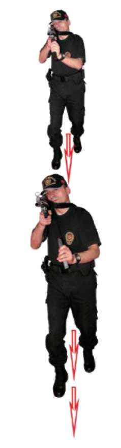
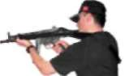
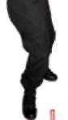
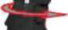
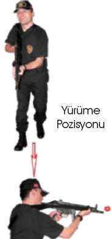
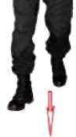
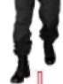
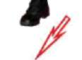
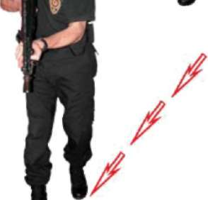
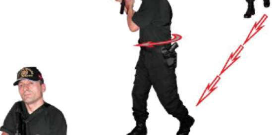

BÖLÜM
İLERİ SEVİYE ATIŞ TEKNİKLERİ
Resim-17.c) Hareket Hâlinde Şarjör Değiştirme Tekniği 2.6.6. Hedeflere Paralel Yürürken Sağ ve Sol Yönden Çıkan Hedeflere Hareket Hâlinde Atış Teknikleri
Önce silahınızı normal olarak doldurup hedefleri sağ paralelinize alarak ileriye doğru yürüme tekniğine geçin. Dikkatinizi hedeflere toplayın. Başka hedeflerin çıkması muhtemel alanları da kontrolünüzde bulundurun. Verilen her atış komutunda silahın omuz boşluğundaki kaynağını bozmadan, vücudunuzun bel kısmından dönerek sağ yönünüzde bulunan size en yakın veya tehlike arz eden hedeflere atış yapın ve tekrar silahınızı yürüme yönünüze çevirin. Her tekrarlanan atış komutunda bu atış tekniğini tekrarlayın. Ayrıca ters yönden yürüyerek hedeflerinizi sol paralelinize alın ve aynı atış tekniğini sol yöndeki hedeflere doğru yapın. (Bakınız Resim-17.d) 131






Yürüme
Pozisyonu
Belden
Belden
Sağa Atış
Sola Atış
Pozisyonu
Pozisyonu
Yürüme
Yürüme
Pozisyonu
Pozisyonu
Resim-17.d) Hedeflere Paralel Yürürken Sağ ve Sol Yönden Çıkan Hedeflere Hareket Hâlinde Atış Teknikleri
2.6.7. Hedeflere Çapraz Yürürken Sağ ve Sol Yönden Çıkan Hedeflere Hareket Hâlinde Atış Teknikleri
Hedeflere çapraz yürürken uzak mesafeden yakın mesafeye doğru oluşturduğunuz teğet üzerinde silahınızı normal doldurun. İleriye doğru yürüme tekniğine geçerek hedeflerinizi sağ yöne alın. Hedeflere çapraz yürürken dik-132



BÖLÜM
İLERİ SEVİYE ATIŞ TEKNİKLERİ
katinizi hedeflere toplayın. Başka hedeflerin çıkması muhtemel alanları da kontrolünüzde bulundurun. Verilen her atış komutunda silahın omuz boşluğundaki kaynağını bozmadan, vücudunuzun bel kısmından dönerek sağ yönünüzde bulunan size en yakın veya tehlike arz eden hedeflere duraklamadan atış yapın ve tekrar silahınızı yürüme yönünüze çevirin. Her tekrarlanan atış
komutunda bu atış tekniğini tekrarlayın. Ayrıca ters yönden yürüyerek hedeflerinizi sol paralelinize alın ve aynı atış tekniğini sol yöndeki çapraz hedeflere doğru yapın.
Bu atış tekniği ile hedeflere, uzak mesafeden yakın mesafeye doğru atış
yapılmaktadır. Bundan dolayı yürüyüş hızınıza orantılı olarak hedeflere uzak mesafelerden atış hızını düşürerek, yakın mesafelerden de atış hızını artırarak atış yapmalısınız. (Bakınız Resim-17.e.1-2) Yürüme
Pozisyonu
Belden
Dönerek Sağa
/
Çapraz Atış
Pozisyonu
Yürüme
Pozisyonu
Resim-17.e.1) Hedeflere Çapraz Yürürken Soldan Çıkan Hedeflere Hareket Hâlinde Atış Tekniği